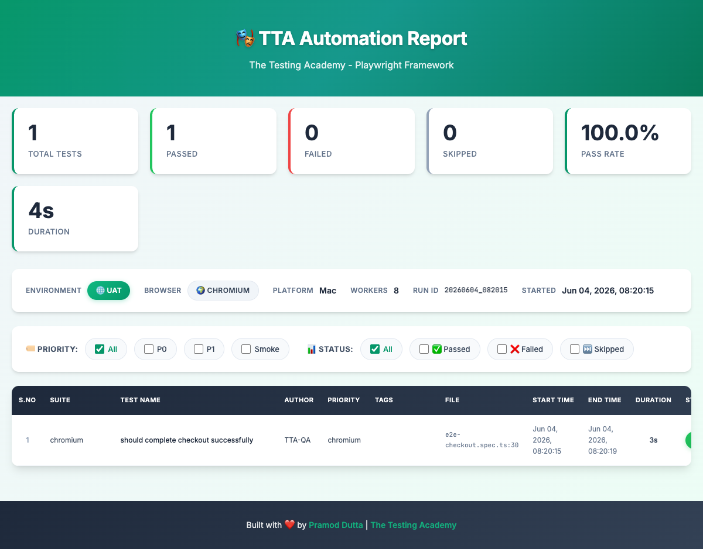
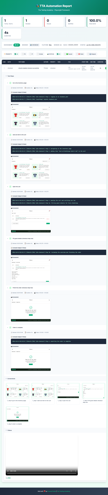

Plain-English .feature files describe the behaviour; the steps delegate
straight to the Page Objects you already have. No automation logic is
duplicated — Cucumber is a readable front end over TTACart.
Concept
Cucumber runs Behaviour-Driven Development: you write specifications in a structured plain language called Gherkin, and Cucumber executes them by matching each line to a step definition. Three moving parts:
The Gherkin spec — Feature, Scenario,
Given/When/Then. Readable by anyone on the team.
Each Gherkin line maps to a TypeScript function that drives an existing Page Object. The glue to your framework.
The World (per-scenario state + Page Objects) and hooks that launch
and tear down the browser.
And / But continue the previous keyword.
Setup
Everything lives under src/cucumber/; nothing else changes.
cucumber.jsOne profile per level. Sets TS_NODE_PROJECT to the CommonJS tsconfig
before hooks load; registers ts-node + tsconfig-paths.
tsconfig.jsonRoot tsconfig is Node16, which ts-node can't require.
This override flips to CommonJS and re-declares the path aliases.
support/world.ts holds the page + POMs per scenario; hooks.ts
launches/tears down Chromium and screenshots failures.
// sets the CommonJS tsconfig before the requireModule hooks load
process.env.TS_NODE_PROJECT = process.env.TS_NODE_PROJECT || 'src/cucumber/tsconfig.json';
const common = {
requireModule: ['ts-node/register', 'tsconfig-paths/register'],
format: ['progress-bar', 'html:reports/cucumber/report.html', 'summary'],
};
module.exports = {
level1: { ...common,
require: ['src/cucumber/support/**/*.ts', 'src/cucumber/level-01-basic/steps/**/*.ts'],
paths: ['src/cucumber/level-01-basic/features/**/*.feature'] },
// level2 also loads level1 steps — login steps are reused
};export class CustomWorld extends World {
page!: Page;
loginPage!: LoginPage;
cartPage!: CartPage; // …all the existing Page Objects
initPages(): void { // called from the Before hook
this.loginPage = new LoginPage(this.page);
this.cartPage = new CartPage(this.page);
}
}
setWorldConstructor(CustomWorld);BeforeAll(async () => { browser = await chromium.launch({ headless: !process.env.HEADED }); });
Before(async function (this: CustomWorld) {
this.context = await browser.newContext({ baseURL: BASE_URL });
this.page = await this.context.newPage();
this.initPages();
});
After(async function (this: CustomWorld, { result }) {
if (result?.status === Status.FAILED) this.attach(await this.page.screenshot(), 'image/png');
await this.page?.close();
});Level 0
Install the three packages, then prove the whole toolchain runs end to end.
npm install -D @cucumber/cucumber ts-node tsconfig-paths
npx playwright install chromium
npm run cucumber:level0@level0 @smoke
Feature: Cucumber + Playwright wiring (Level 0)
Scenario: The TTACart login page loads
Given I open the TTACart login page
Then the page title should contain "TTACart"Given('I open the TTACart login page', async function (this: CustomWorld) {
await this.page.goto(LoginPage.PATH);
});
Then('the page title should contain {string}', async function (this: CustomWorld, expected: string) {
await expect(this.page).toHaveTitle(new RegExp(expected, 'i'));
});Level 1
Feature + Background + Given/When/Then. A
Background runs before every scenario — here it opens the login page. The
steps call straight into LoginPage and InventoryPage.
@level1 @login
Feature: TTACart Login (Level 1 — basic scenarios)
Background:
Given I am on the TTACart login page
@smoke @P0
Scenario: A standard user can log in
When I log in as "standard_user" with password "tta_secret"
Then I should land on the products page
@negative
Scenario: A locked-out user is refused
When I log in as "locked_out_user" with password "tta_secret"
Then I should see a login error containing "locked out"When('I log in as {string} with password {string}',
async function (this: CustomWorld, username: string, password: string) {
await this.loginPage.loginAs(username, password); // ← reuses the POM
});
Then('I should land on the products page', async function (this: CustomWorld) {
await this.inventoryPage.assertLoaded();
});"locked out" and "do not match"
must match the real TTACart error strings — the step asserts
[data-test="error"] contains them.
Level 2
The three ways Cucumber feeds data into one scenario body:
One scenario, many Examples rows. Each row re-runs the body with its
placeholders filled in.
A table passed into a single step — add N products in one
When via table.hashes().
Personas read from data/customers.json; a full checkout runs per
persona.
Scenario Outline: <username> logging in ends on the <outcome>
When I log in as "<username>" with password "<password>"
Then I should see the "<outcome>"
Examples: valid users
| username | password | outcome |
| standard_user | tta_secret | products |
| problem_user | tta_secret | products |
| performance_glitch_user | tta_secret | products | When I add the following products to the cart:
| productId |
| tta-practice-backpack |
| tta-bike-light |
| test-allthethings-tshirt-red |
// step — one When consumes the whole table
When('I add the following products to the cart:', async function (this: CustomWorld, table: DataTable) {
for (const { productId } of table.hashes()) await this.inventoryPage.addToCart(productId);
});const customers = JSON.parse(readFileSync(join(__dirname, '../data/customers.json'), 'utf-8'));
When('I check out as the {string} customer', async function (this: CustomWorld, persona: string) {
const customer = customers[persona];
await this.cartPage.checkout();
await this.checkoutStepOnePage.fillGuest(customer); // ← reuses the POM
await this.checkoutStepOnePage.continue();
await this.checkoutStepTwoPage.finish();
});Print-friendly reference · pin this above your desk
Every Gherkin keyword, npm script, data technique, and config knob for this BDD layer — on one screen. Use ⌘P to print; the grid collapses to A4.
Reference
| Command | What it runs |
|---|---|
npm run cucumber:level0 | Level 0 — 1 scenario / 2 steps |
npm run cucumber:level1 | Level 1 — 3 scenarios / 9 steps |
npm run cucumber:level2 | Level 2 — 9 scenarios / 31 steps (loads Level 1 steps too) |
npm run cucumber | Every level (default profile) |
npm run cucumber:headed | HEADED=1 — watch the browser |
npx cucumber-js --profile level2 --tags "@datatable" | Filter by tag inside a profile |
BASE_URL=… npm run cucumber | Point at a different environment |
reports/cucumber/report.html (gitignored) after every run.Workshop
| Time | Topic |
|---|---|
| 0:00–0:20 | What is BDD? The three components; Given/When/Then. |
| 0:20–0:45 | Level 0 — install, cucumber.js, the CommonJS tsconfig, first green run. |
| 0:45–1:30 | Level 1 — Feature/Background, step definitions, the World, reusing Page Objects. |
| 1:30–1:45 | Break. |
| 1:45–2:40 | Level 2 — Scenario Outline, Data Table, external JSON; hooks + failure screenshots. |
| 2:40–3:00 | Tag filtering, the HTML report, wrap-up + Q&A. |
Context
Cucumber sits at the top of a layered Playwright framework. Each layer has one job; the BDD steps only ever talk to the Page Object layer:
| Layer | Lives in | Responsibility |
|---|---|---|
| Gherkin features | src/cucumber/**/features | Describe behaviour in plain English. |
| Step definitions | src/cucumber/**/steps | Map each line to a Page Object call. |
| Page Objects | src/pages | Encapsulate selectors + actions per screen. |
| Element utilities | src/utils/UtilElementLocator | Logged, timeout-aware locator wrappers. |
| Logger / reporter | src/utils | Winston logs + the custom TTA HTML report. |

Overview — stats dashboard, environment bar, and the filterable test table.

End-to-end flow — each step shows its log line and a screenshot, then the gallery and run video.
Help
| Symptom | Cause / fix |
|---|---|
Cannot use import statement outside a module | TS_NODE_PROJECT isn't pointing at src/cucumber/tsconfig.json — run via the npm scripts. |
Cannot find module '@pages/…' | tsconfig-paths/register missing, or aliases not mirrored in the Cucumber tsconfig. |
| Undefined step (yellow) | The Gherkin text doesn't match any step definition; check the profile loads that steps file. |
| Negative-login assertion fails | TTACart error copy changed — update the "locked out" / "do not match" fragments. |
| Timeouts on a slow network | Bump setDefaultTimeout(...) in hooks.ts, or run HEADED=1 to watch. |
Type error only in npm run typecheck | The root tsconfig (Node16) checks the same files; transpileOnly hides it at runtime — fix the type. |